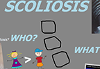
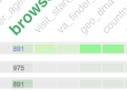
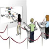

people

rhema linder
Ph.D. Student,
Computer
Science
Rhema Linder is a PhD student in the Interface Ecology Lab at Texas A&M University. His research interests center around computing in popular media and education, supporting and analyzing practices of expression, curation, exploratory search, and creativity. His work includes ethnographic, analytic, and design research of online curation: searching for, collecting, organizing, and sharing multimedia on the Web.
Before graduating from LeTourneau University in 2009, he was homeschooled in the College Station area. Rhema teaches supplemental courses to homeschoolers. He has interned and worked at social media start-ups Livemocha and Collective Labs, developing both research and production-ready software.
Currently, he helps lead research in analyzing the use of IdeaMâché, a cloud-based platform for collecting, organizing, and sharing text, pictures, and links gathered from the Web.
In 2014, Rhema interned at Adobe Research's Imagination Lab. He worked Eunyee Koh on big data projects inlcuding Quarry. In 2015, Rhema will be working with Jaime Teevan and others at Microsoft Research.
publications and presentations
 Linder, R. and Kerne, A.,
Analyzing Creative Processes: Qualitative Methods Meets Visual Analytics,
IEEE Conference on Visual Analytics Science and Technology VAST 2016 Doctoral Colloquium, Baltimore, Maryland.
Linder, R. and Kerne, A.,
Analyzing Creative Processes: Qualitative Methods Meets Visual Analytics,
IEEE Conference on Visual Analytics Science and Technology VAST 2016 Doctoral Colloquium, Baltimore, Maryland.

Lupfer, N., Kerne, A., Webb, A.M., Linder R., Qu Y., Valdez, A.,
Patterns of Free-form Curation: Visual Thinking with Web Content,
Proc. ACM International Conference on Multimedia 2016, Amsterdam, Netherlands. [20%].
http://dx.doi.org/10.1145/2964284.2964303
Linder, R.,
Composing Everyday Plans on Pinterest: 5 Minute Projects and Gathered Ideas,
CHI 2016 Workshop: Productivity Decomposed: Getting Big Things Done with Little Microtasks, San Jose, California.
 Linder, R., Lupfer, N., Kerne, A., Webb, A. M., Hill, C., Qu, Y., Keith, K., Carrasco M., Kellogg, E.
Beyond Slideware: How a Free-form Presentation Medium Stimulates Free-form Thinking in the Classroom,
Proc. ACM Creativity and Cognition 2015. [28%].
http://dx.doi.org/10.1145/2757226.2757251
Linder, R., Lupfer, N., Kerne, A., Webb, A. M., Hill, C., Qu, Y., Keith, K., Carrasco M., Kellogg, E.
Beyond Slideware: How a Free-form Presentation Medium Stimulates Free-form Thinking in the Classroom,
Proc. ACM Creativity and Cognition 2015. [28%].
http://dx.doi.org/10.1145/2757226.2757251
 Jain, A., Lupfer, N., Qu, Y., Linder, R., Kerne, A., Smith, S. M.,
Evaluating TweetBubble with Ideation Metrics of Exploratory Browsing,
Proc. ACM Creativity and Cognition 2015. [28%].
Best Paper Nomination.
[video]
Jain, A., Lupfer, N., Qu, Y., Linder, R., Kerne, A., Smith, S. M.,
Evaluating TweetBubble with Ideation Metrics of Exploratory Browsing,
Proc. ACM Creativity and Cognition 2015. [28%].
Best Paper Nomination.
[video]
 R., Linder, and Koh, E., Quarry: Picking From Examples to Explore Big Data, Proc CHI 2015 EA. http://dx.doi.org/10.1145/2702613.2732933
 Lupfer, N., Hamiliton, W. Webb, A., Linder, R., Edmonds, E., and Kerne, A., The Art.CHI Gallery: An Embodied Iterative Curation Experience, Interactivity Exhibit, Proc CHI 2015 EA. http://dx.doi.org/10.1145/2702613.2725457
 Kerne, A., Webb, A.M., Smith, S.M., Linder, R., Lupfer, N., Qu, Y., Moeller, J., Damaraju, S.,
Using Metrics of Curation to Evaluate Information-based Ideation,
ACM Transactions on Computer-Human Interaction (ToCHI),
21(3), June 2014, 48 pages.
http://dx.doi.org/10.1145/2591677
Kerne, A., Webb, A.M., Smith, S.M., Linder, R., Lupfer, N., Qu, Y., Moeller, J., Damaraju, S.,
Using Metrics of Curation to Evaluate Information-based Ideation,
ACM Transactions on Computer-Human Interaction (ToCHI),
21(3), June 2014, 48 pages.
http://dx.doi.org/10.1145/2591677
 Qu, Y., Kerne, A., Lupfer, N., Linder, R., Jain, A.,
Metadata Type System: Integrate Presentation, Data Models and Extraction to Enable Exploratory Browsing Interfaces,
Proc. ACM Engineering Interactive Computing Systems (EICS) 2014, 107-116 [18%].
http://dx.doi.org/10.1145/2607023.2607030
[video]
Qu, Y., Kerne, A., Lupfer, N., Linder, R., Jain, A.,
Metadata Type System: Integrate Presentation, Data Models and Extraction to Enable Exploratory Browsing Interfaces,
Proc. ACM Engineering Interactive Computing Systems (EICS) 2014, 107-116 [18%].
http://dx.doi.org/10.1145/2607023.2607030
[video]
Linder, R., Snodgrass, C., and Kerne, A. Everyday Ideation: All of My Ideas Are On Pinterest, Proc. CHI 2014, 2411-2420 [23%]. http://dx.doi.org/10.1145/2556288.2557273
 Linder, R. and Kerne, A.,
Searching to Measure the Novelty of Collected Ideas,
CHI 2013 Evaluation Methods for Creativity Support Environments Workshop, Paris, France, May 2013.
Linder, R. and Kerne, A.,
Searching to Measure the Novelty of Collected Ideas,
CHI 2013 Evaluation Methods for Creativity Support Environments Workshop, Paris, France, May 2013.
 Webb, A.M., Linder, R., Kerne, A., Lupfer, N., Qu, Y., Poffenberger, B., and Revia, C.,
Promoting Reflection and Interpretation in Education: Curating Rich Bookmarks as Information Composition,
Proc. Creativity and Cognition 2013, Sydney, Australia, June 2013.
Webb, A.M., Linder, R., Kerne, A., Lupfer, N., Qu, Y., Poffenberger, B., and Revia, C.,
Promoting Reflection and Interpretation in Education: Curating Rich Bookmarks as Information Composition,
Proc. Creativity and Cognition 2013, Sydney, Australia, June 2013.
reviewing
Peer review participation:
- CHI
- CSCW
- Creativity and Cognition
- DIS
- IUI
- CHI Play
connect
- website: InfoVisu.com
- twitter: @rhemalinder
- email: rhema
 ecologylab.net
ecologylab.net